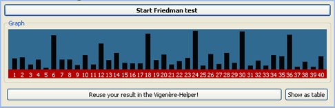

The Friedman test is a method to analyze a Vigenère-encrypted ciphertext. Its approach is, to shift the ciphertext against itself, and count the coincidences of characters standing on top of each other. If the shift is the keylength we're looking for (or a multiple of it), the coincidence sum, or coincidence index is a larger number than normal.
A click on the main button (on the top) analyzes the text in your opened editor and shows you a graph. You can drag the graph with the mouse and zoom with right / left mouseclicks on it.

You have to look out for peaks in the graph, which shows you the sum of coincidence indices over the shifts (x-axis). These peaks should occur recurringly, because the length of the key, or its multiples matter, as said; thus, the period of these peak occurrences is the keylength we were looking for.
The search for the keylength is often the first step to decipher a Vigenère-encrypted ciphertext. The Friedman plug-in integrates with the Vigenère-helper-plug-in, which helps you to decipher a Vigenère-ciphertext in simple steps. To make use of this feature, click the button below the graph to save your result into the Vigenère-helper.